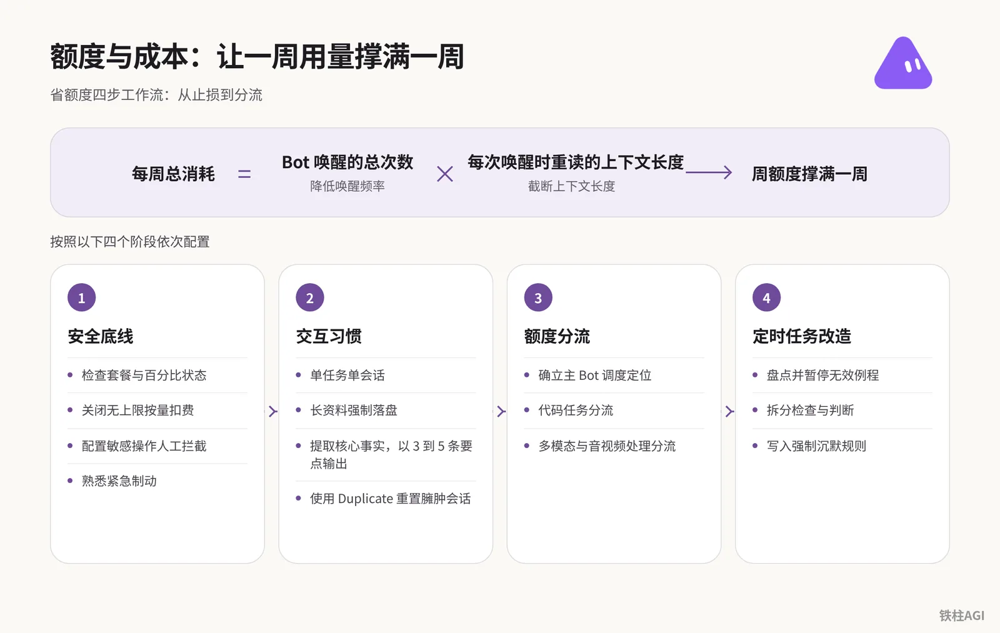
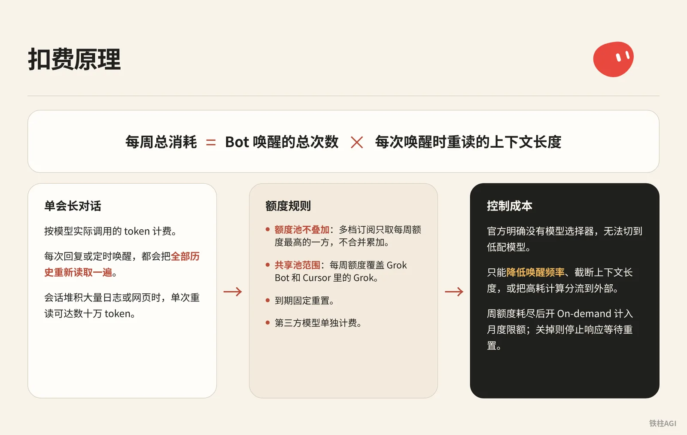
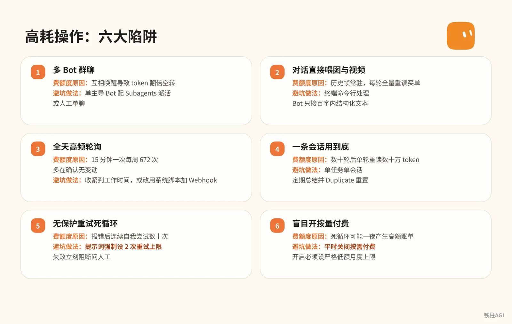
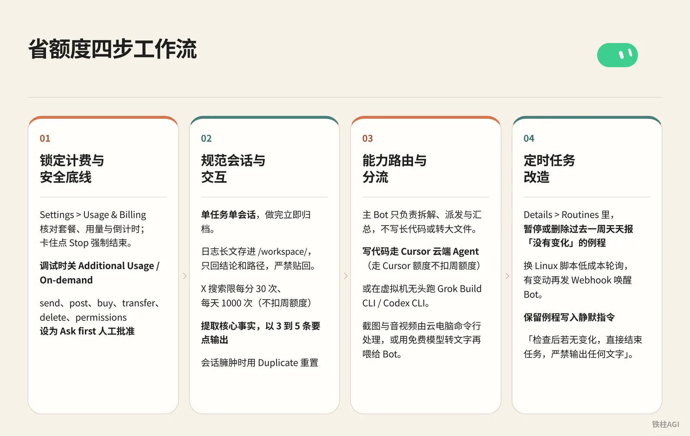

铁柱AGI · 24/60
第 10 章 额度与成本：让一周用量撑满一周
周二额度 (quota (how much use your plan allows))用尽、被扣上百美元，常因算力空转。Bot 每次唤醒都重读完整历史，几小时就胀到数十万 token。
想稳撑一周，做好这三项。
- 关掉后台按需付费。
- 减少高频轮询与多 Bot 互聊。
- 收紧会话，少往聊天框塞大文件。

Grok Bot (xAI's AI assistant that comes with its own computer) 的额度扣费原理是什么？
Grok Bot 按调用 token 计费，核心机制是单会长对话，每次回复或唤醒都会全量重读历史上下文，总消耗等于唤醒次数乘每次重读的上下文长度。

Grok Bot 按模型实际调用的 token 计费。它的核心机制是单会长对话，每次回复或定时唤醒，都会把全部历史重新读取一遍。
每周总消耗 = Bot 唤醒的总次数 × 每次唤醒时重读的上下文长度会话堆积大量日志或网页时，单次重读可达数十万 token，回一句也是全量计算。
社区拆解见 《How to Stop Your Grok Bot From Eating a Week of Usage in a Day｜Fan Grok Bot Radar》。
2026 年 10 月 12 日起实行 The X Subscription 统一订阅方案，各档位标准如下：
| 套餐档位 | 个人订阅价格 | 团队席位价格 | 额度倍率与 Grok Bot 权限 |
|---|---|---|---|
| Free | $0 | 不适用 | Limited，不含完整 Bot |
| Plus | $8/月（$80/年） | 不适用 | Base，明确不含 Grok Bot |
| Premium | $30/月（$300/年） | $30/席/月 | 4x，包含 Grok Bot |
| Super | $100/月（$1000/年） | $100/席/月 | 15x，包含 Grok Bot |
| Ultra | $200/月（$2000/年） | $200/席/月 | 50x，包含 Grok Bot |
额度规则详见 Cursor 官方指南：方案和计费，日常使用有几处硬性限制。
- 额度池不叠加：多档订阅只取每周额度最高的一方，不合并累加。
- 共享池范围：每周额度覆盖 Grok Bot 和 Cursor 里的 Grok，也包括网页端、手机端、Imagine 与 Voice，到期固定重置。
- 第三方模型单独计费：在 Cursor 内调用非 Grok 模型直接按量计费。
- 按需付费与月度限额：周额度耗尽后开 On-demand 计入月度限额（Monthly Limit），超出限额任务也会跑完；关掉则停止响应等待重置。
官方明确没有模型选择器（there is no model picker），无法切到低配模型。 控制成本只能降低唤醒频率、截断上下文长度，或把高耗计算分流到外部。
Grok Bot 有哪些常见的高耗额度陷阱？
必须避开多 Bot 群聊、对话喂图与视频、全天高频轮询、长会话一用到底、无保护重试死循环，以及未设月度上限就盲目开启按需付费。

参考出处：《4.1 额度与成本：省额度清单》、《Grok Bot 额度超长续航保姆级新手指南（直接发给 Bot！）》。
| 高耗操作 | 费额度原因 | 避坑做法 |
|---|---|---|
| 多 Bot 群聊 | 互相唤醒导致 token 翻倍空转 | 单主导 Bot 配 Subagents 派活，或人工单聊 |
| 对话直接喂图与视频 | 历史帧常驻，每轮全量重读买单 | 终端命令行处理，Bot 只接百字内结构化文本 |
| 全天高频轮询 | 15 分钟一次每周 672 次，多在确认无变动 | 收紧到工作时间，或改用系统脚本加 Webhook (a web address that triggers an action when called) |
| 一条会话用到底 | 数十轮后单轮重读数十万 token | 单任务单会话，定期总结并 Duplicate 重置 |
| 无保护重试死循环 | 报错后连续自我尝试数十次 | 提示词 (prompt (the instruction you give the AI))强制设 2 次重试上限，失败立刻阻断问人工 |
| 盲目开按量付费 | 死循环可能一夜产生高额账单 | 平时关闭按需付费，开启必须设严格低额月度上限 |
省额度四步工作流 (workflow (a chain of steps done in order))：从止损到分流

锁定计费与安全底线
- 进 Settings > Usage & Billing 核对套餐（Premium $30/月 或 Super $100/月）、用量与倒计时；卡住点 Stop 强制结束。
- 调试时关 Additional Usage / On-demand；若开，去 cursor.com/dashboard > 支出 > Monthly Limit 设月限额（$10-$20）。
- 进 Settings > General > Auto-review，把 send、post、buy、transfer、delete、permissions 设为 Ask first 人工批准。
规范会话与交互
- 单任务单会话，做完立即归档。
- 日志长文存进
/workspace/，只回结论和路径，严禁贴回。 - X 搜索限每分 30 次、每天 1000 次（不扣周额度），约束 Bot「提取核心事实，以 3 到 5 条要点输出」。
- 会话臃肿时用 Duplicate 重置，先让旧 Bot 写 10 行内总结，复制发给新 Bot 接手，隐藏旧 Bot。
能力路由与分流
- 主 Bot 只负责拆解、派发与汇总，不写长代码或转大文件。
- 写代码走 Cursor 云端 Agent (an AI that takes steps on its own to finish a task)（走 Cursor 额度不扣周额度），或在虚拟机无头跑 Grok Build CLI / Codex CLI。
- 截图与音视频由云电脑命令行处理，或用免费模型转文字再喂给 Bot。
定时任务 (scheduled task (a job that runs at set times))改造
- Details > Routines 里，暂停或删除过去一周天天报「没有变化」的例程。
- 换 Linux 脚本低成本轮询，有变动再发 Webhook 唤醒 Bot。
- 保留例程写入静默指令：「检查后若无变化，直接结束任务，严禁输出任何文字」。
例程与轮询深度优化：告别无效空转
例程是隐蔽的额度黑洞，高频轮询一天就能用掉整周用量。
频率收敛与运行窗口控制
客户端先核对 Bot 的 Timezone 是否与本地一致。不同调度设定消耗如下：
| 调度设定 | 每周运行次数 | 适用场景 |
|---|---|---|
| 每 15 分钟一次（全天候） | 672 次 | 极易在 1 到 2 天耗尽额度，极少需要 |
| 每小时一次（全天候） | 168 次 | 关键基础设施故障监控 |
| 工作日 9:00 至 17:00 每小时一次 | 45 次 | 看板跟踪、工单处理与邮件分拣 |
| 每个工作日 3 次 | 15 次 | 每日收件箱早中晚初筛、进展跟进 |
| 每周 1 次 | 1 次 | 行业周报、技术动态总结与文档归档 |
限定工作时间可用标准 cron 格式：
CRON_TZ=Asia/Shanghai 0 9-17 * * 1-5这行规则把唤醒量降低了 93%。在上海时区工作日 9:00 至 17:00 整点运行，一周仅触发 45 次。
指向技能 (skill (a saved how-to the bot can reuse))并严格执行沉默规则
例程提示词只指向技能，不展开细节：
- 斜杠命令指定具体技能名与检查对象
- 给出判定阈值、停止条件与单次重试限制
- 无变化时保持完全静默，不发任何消息
纯静默容易掩盖中途故障。搭配方案参考Cursor 官方指南：例程：高频例程保持静默；低频例程每天 18:00 发单行心跳日志，确认过去一天正常执行。
双角色分离：Linux cron 脚本巡检加 Webhook 唤醒
Bot 休眠时底层 Linux 云电脑还在运行，别让大模型去干机械比对。
- 检查角色：系统自带 cron 调度 Python 或 Shell 脚本比对，耗时几秒，消耗额度为零。
- 判断角色：脚本检测到变动再发 Webhook 唤醒 Bot 进行逻辑判断与报告。
Webhook 唤醒步骤与验收标准：
- 在例程 Webhook 区域获取
POST to地址与key。 - 向该 URL 发送带有
Authorization: Bearer <key>头的 POST 请求。 - 检查响应状态码，返回 200 即代表唤醒成功。
实战案例与避坑
铁柱改造营销总监 Bot 的 6 条例程：4 条交付类例程保留不变；2 条纯等回复与审 PR 的空转任务换成系统 cron 脚本加 Webhook。脚本工作日白天每半小时检查一次，有新变动才唤醒。
改造耗时约 23 分钟，每周减少 8 到 10 次多余唤醒，新动态发现速度提到了半小时内。
Craig Hewitt 24 小时烧光 Ultra 周额度：订阅每月 $200 的 Cursor Ultra 套餐，2026 年 8 月 23 日一天耗尽整周额度。
他在日常主聊的主管 Bot 上归档 10 年旧邮件，接口拉取正文不断追加到会话，上下文胀到几十万 token 引发全量重读风暴。
案例出处：《How to Stop Your Grok Bot From Eating a Week of Usage in a Day｜Fan Grok Bot Radar》。
高负载避坑要点：高负载一次性任务绝不能放在天天聊的主 Bot 上，必须新建专用 Bot 或通过 Duplicate 生成副本；处理前先用邮箱规则过滤垃圾邮件；批量任务必须先拿 1 到 2 个样本验证无误后再启动。
群聊与多 Bot 控制：杜绝互相唤醒
千万别把多个 Bot 拉进同一个群聊。 新消息会全员广播，每个 Bot 都会重读全量历史并回复。铁柱自述 4 个 Bot 互聊迅速吃掉了 25% 周配额（未核）。
多 Bot 协作要坚持中心辐射、禁止横向串联。
- 唯一主导：只保留一个主导 Bot 作为交互入口。
- 单向派活：主导 Bot 启动 Subagents 或 A2A 单点交接，子智能体 (agent (an AI that acts on its own))跑完自动退出，不在群里接话。
- 成果落盘：上游把数据写入
/workspace/下的文件，下游直接读取，不在聊天框推敲。 - 清理闲置：确认无挂载例程后及时删除闲置 Bot，防止被误唤醒。
Grok Bot 如何做用量审计与耗尽应急？
每周重置前一天花 15 分钟排查例程记录与扣费，若额度耗尽前端锁定，底层 Linux 云电脑不会销毁，可直接打开终端接管代码并手动提交推送。
每周 15 分钟审计流程
建议在每周重置日前一天花 15 分钟核查：
- 打开 Settings > Usage & Billing 查看已用百分比。若消耗超前，调出前几天任务定位异常日期。
- 进入 Details > Routines 查看近 20 次执行记录（Running、Succeeded 或 Failed），排查报错重试或频繁空转的例程。
- 针对 v0.66.0 起的星标主 Bot，在描述中明确禁止主动接活，防它自行揽下琐事。
- 访问 cursor.com/dashboard，核对 Monthly Limit 与实际按需扣费，确认无异常扣款。
监控盲区与应对
系统不提供单个 Bot、例程、会话或模型的消耗明细，20 条运行历史也不记录 token 和金额。测试新流程必须采用控制变量法：
- 每次只新建或修改一个 Bot 或例程。
- 运行前后各查一次 Usage & Billing 的百分比对比增量，切忌同时上线多个新例程。
额度耗尽时的云电脑接管应急
周额度 100% 耗尽且前端对话锁定后，底层的 Linux 云电脑并没有销毁，通过客户端打开桌面或系统终端即可接管：
- 查看
/workspace/目录下未交付的代码与文件。 - 手动执行
git commit和git push推送到远端仓库。 - 用本地命令行工具在终端接替调试，绝不需要花钱购买附加用量。
出处：《4.1 额度与成本：省额度清单》、《Grok Bot 额度超长续航保姆级新手指南（直接发给 Bot！）》
直接发给 Bot 的省额度提示词库
上下文防膨胀
- 规则让 Bot 提炼后记住，省去聊天重复交代；共享 Bot 可写入详情 About。
请回顾我们至今的协作流程，执行两项沉淀工作：
1. 把你需要长期遵守的行为边界、汇报格式与约束规矩，提炼成一段不超过 300 字的精简文本，我将直接粘贴到你的描述（Description）中；
2. 把我们刚才已经跑通的标准操作流程，封装为一个可复用的技能（Skill），供后续例程直接调用。
完成提取后直接在对话中给出文本，不要展开多余闲聊。- 原始日志与长资料强制存盘，不直接贴进会话。
从现在起执行上下文瘦身规则：
所有抓取的长篇网页、接口调试日志、大批原始数据和阶段性中间产物，一律直接保存为 /workspace/ 目录下的文本文件。在聊天窗口中回复我时，严格只提供核心结论、关键变动要点以及对应的文件绝对路径。严禁将大段原始文本或日志代码贴回对话。- 多模态图片转命令行解析，避开聊天框高消耗。
遇到查看多张截图、分析视频画面、逐帧拉片、音频转写或处理长扫描件的任务时，严禁在当前对话框中直接读取原始多模态文件。
你应当在云电脑终端中调用系统已配置的命令行工具（如 Grok Build 或相关转录 CLI）在后台执行，并输出简明的结构化文字摘要；你只需阅读生成的文字结论。如果当前环境无法执行命令行解析，请停下提醒我先在网页端转换成文字后再发给你。任务与代码分流
- 监控例程无变化时静默退出。
请列出当前你名下的全部例行任务（Routines），注明每条任务的触发频率、每周预计运行次数以及没有变化时的处理逻辑。
找出其中运行最频繁、消耗最大的任务，向我提出降低频率的具体建议；同时为所有监控类例程添加硬性约束：执行检查后若目标无实质变动，立刻静默退出，严禁向我发送「一切正常」或「没有新消息」等无有效信息的通报。- 任务走单聊派发，严禁 Bot 私自拉群互聊。
严格执行独立单聊工作模式：
只接收并执行我本人下达的直接指令。严禁在没有得到我明确授权的情况下，主动在会话中唤醒、提及或联络其他 Bot 开展群聊协同；如果任务涉及多个专业环节，请将结果写成文件并由我来负责跨 Bot 调度，或者将其派发给云电脑内的后台 CLI 工具独立运行。- Bot 专注调度，长代码编写与调试分流给 Grok Build 后台 CLI。
明确你的角色定位是任务调度主管，核心职责是理解目标、拆解方案、组织逻辑和验收结果。
不要在聊天窗口中直接编写整段的长篇代码，也不要通读整个大型仓库做全量重构。涉及代码编写、项目调试和环境排查的工作，统一在后台调用云电脑内已经授权的 Grok Build 命令行工具执行。执行完毕后，你仅需检查其退出状态码并将最终结论同步给我。搜索、风控与交接
- X 平台搜索结果存盘，对话只汇报精简要点。
在检索 X 平台的推文、观点或动态时，使用你自带的免费搜索能力。
搜索到的批量推文原文，请直接写入 /workspace/ 下的对应 markdown 文件中保存。在聊天框中向我汇报时，严格限制为 3 到 5 条提炼后的核心事实与推文对应链接，严禁把多条推文的大段原文搬运回聊天中。- 自动化与接口必须设重试上限，异常时强制中断人工审批。
在执行自动化任务、网络请求或文件排查时，严格执行防死循环规则：
同一操作或相似接口调用的重试上限为 2 次。如果连续 2 次重试均未成功，或者对下一步执行动作存在疑问，立刻中断自动化流程并向我发起提问，详细说明遇到的错误原因，严禁自行无限重试或在后台空转。- Duplicate 复制前让旧 Bot 整理交接卡片，严格限制在 10 行以内。
搜索、风控与交接
当前会话历史较长，需要进行交接重置。请为我梳理一份 10 行以内的结构化交接总结，严格包含以下五项内容：
1. 你的角色设定与核心职责；
2. 当前正在进行的任务目标；
3. 已经达成的关键结论与做过的核心决定；
4. 下一步必须立刻执行的动作；
5. 新会话需要优先读取的关键文件绝对路径。
输出完毕后不要执行任何新任务，等待我启动新会话。- 密钥框填 OpenRouter 免费 key，轻量任务直接分流。
请协助配置 OpenRouter 免费模型调用环境，严格遵循以下安全执行流程：
1. 在聊天框中调出系统的密钥输入弹窗向我收取 API Key，严禁让我把密钥明文发送在普通对话中；
2. 将获取到的 Key 保存到 ~/.agents/secrets/openrouter.env 文件中，环境变量名指定为 OPENROUTER_API_KEY；
3. 对该密钥文件执行 chmod 600 设置安全权限；
4. 执行全程严禁在终端标准输出或聊天消息中打印该 Key 的明文内容；
5. 使用 curl 调用一个以 :free 结尾的免费模型进行一次最小文本测试，确认调用成功且费用为 0，并将测试结果告诉我。原型参考：《Grok Bot 额度超长续航保姆级新手指南（直接发给 Bot！）》
容易踩的坑
- Details > Routines 点击 Test 会跑真机流程，每次都扣真金额度。
- Cursor 与 SuperGrok (xAI's paid subscription plan) 额度不累加，只算周用量高的一方，另一方闲置。
- grok.com 与 Grok Bot 计费独立，网页版充值不能抵扣且不退款。
- 聊天框贴 API (a way for programs to talk to each other) Key 或 Webhook 占 token 且危险，必须用安全弹窗写环境变量。
- 点「更新电脑」会抹掉 Linux cron，
/workspace/保留，更新后得重装 cron。 - Duplicate 会丢弃对话、learned memory 与附件，得手动给新 Bot 喂上下文。
- Monthly Limit 触发后不杀进程，长任务会跑完，死循环可能超额。
做完怎么验收
- 进 Settings > Usage & Billing 和 cursor.com/dashboard 查账单，确认看到已用百分比与重置倒计时，关掉 Additional Usage 或把 Monthly Limit 设在安全低位。
- 让 Bot 模拟删文件或对外发网络请求，必须弹出 Ask first 审批卡片并挂起等待，绝不能静默执行。
- 检查当前会话并下发多推文 X 搜索，侧边栏不留数十轮长会话，只返回 3 到 5 条简报，长文本落盘至
/workspace/，对话框不刷原文。 - 去 Details > Routines 给无变动的监控例程点 Test，检查后直接静默退出，不发多余的「无更新」闲聊。
- 让 Bot 编写多文件依赖代码，看它在后台调用 Grok Build 或云端 Agent，只输出最终状态与执行摘要，聊天框不贴整屏代码。